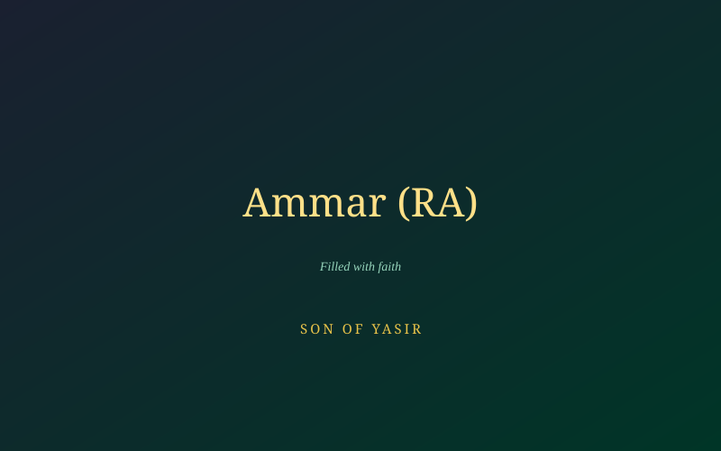

Ammar ibn Yasir (RA)
A son who watched his parents die for the same faith he was forced to deny aloud.

Tortured Alongside His Parents
Ammar ibn Yasir (RA) was tortured together with his mother Sumayyah and father Yasir in the open desert outside Makkah. He witnessed his mother's death by Abu Jahl's spear and his father's death from the same torment. The cruelty did not stop with their deaths — Ammar himself continued to be tormented for refusing to abandon Islam.
Words Spoken Under Unbearable Duress
Under torture so severe that it threatened his life, Ammar (RA) eventually repeated words against his faith that his tormentors demanded — while his heart, as he later wept and explained to the Prophet ﷺ, remained completely firm in belief. Distressed, he came to the Prophet ﷺ fearing he had committed a grave wrong.
"How did you find your heart when you said that?" — The Prophet ﷺ, asking Ammar (RA)
Ammar (RA) answered that his heart remained at peace and full of faith despite his words. The Prophet ﷺ reassured him that if his tormentors repeated the same cruelty, he could say it again to survive — for Allah judges what is in the heart. Soon after, revelation confirmed this mercy directly in the Qur'an:
"Whoever disbelieves in Allah after his belief — except for one who is forced while his heart is secure in faith — but those who open their breast to disbelief, upon them is wrath from Allah." — Surah An-Nahl, 16:106
A Lifelong Witness
Ammar (RA) survived the secret years and went on to live a long life of devoted service to Islam, eventually dying in battle in his nineties — a living testament to a family whose sacrifice in the earliest, hardest days of the faith was never forgotten.
- Survived the same torture that killed both of his parents.
- His ordeal prompted a Qur'anic verse distinguishing coerced speech from genuine disbelief.
- Went on to live decades in devoted service to the early Muslim community.
Continue the Archive
Read the story of Bilal ibn Rabah (RA), tortured on the burning sands for saying 'Ahad, Ahad.'
Read Bilal's Story →